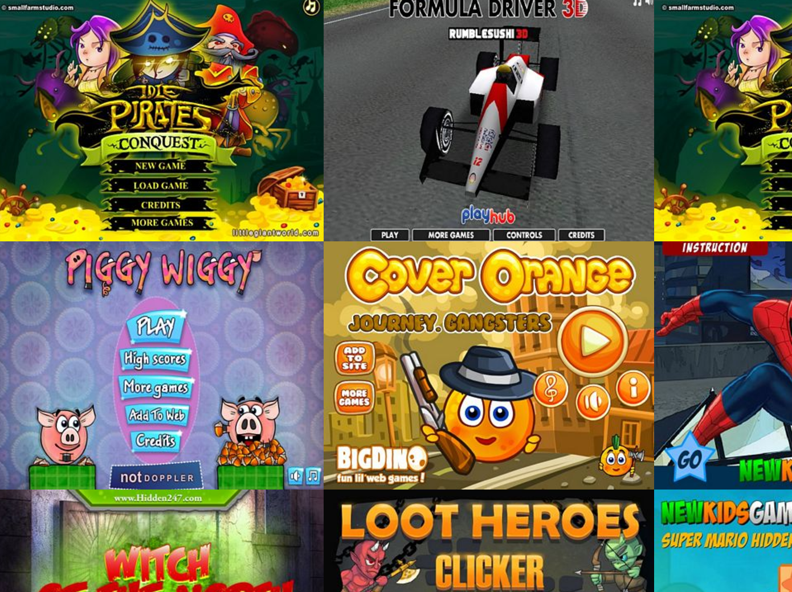

前端工程的昨天、今天和明天
前端的工程化
-
早期的年代，前端不工程
- 页面交互复杂度不高
- 设计师如果会一些基础的 HTML、CSS 的话，与程序员配合就几乎已经足以开发前端
- 架构简单，没有可维护性或可复用性等问题
-
近些年的前端工程化需求
- Web Application 的普及，伴随而来用户界面的复杂性提高，需要有组织的架构与工作流程
- 原有的前端技术与标准难以应付日渐增长的工程化需要
时间节点
2007 ~ 2008：百废待举
- Firefox 刚从 IE 大一统的天下瓜分掉大半领土，逼迫微软开始继续关注浏览器开发与 Web 领域
- Google Chrome 带着 V8 引擎横空出世，打响新一波的浏览器大战
- Web 标准开始继续在各家浏览器厂商的角力与争执中推动
- jQuery 开始普及，逐渐成为最热门的 JavaScript 库
- HTML5 第一份正式草案发布
2009 ~ 2010：寻求方向
- ECMAScript 5 发布
- 微软发布
世纪遗毒IE 8 - Node.js 问世，原本只能运行于浏览器的 Javascript 开始能作为一门服务端语言使用
- HTML5 成为大多数人认可的 Web 未来主流技术，众多特性开始被主流浏览器所支持
- 移动设备访问 Web 流量开始显著增长
2011 ~ 2012：移动设备的崛起
- HTML5 技术获得重大发展以及广泛地被应用，称霸十余载的 Flash 开始渐渐凋零
- Web 标准开始稳定的由各家浏览器厂商角力与协商来慢慢的持续推进，最后经过共识而产生的标准，各家浏览器也绝大部分会遵守标准来实现
- 移动设备上的 Web 体验开始被重视，Responsive Web Design 概念广泛被采用，相关的前端工具如雨后春笋般冒出
-
前端的工程化开始被讨论与推动
- 社区自发推进各种模块机制
- CoffeeScript 与 TypeScript 等 Transpiler 问世
2013 ~ 2014：工程化逐渐发展
- HTML5 正式定稿成为推荐标准
- 各种 CSS 预处理器出现并被使用
- PhoneGap 这种 Hybrid Mobile App 模式被广泛应用
- ECMAScript 6 渐渐受到瞩目与发展，但还未普遍用于开发
- 第一代的 SPA 开发技术成熟，如 Angular / Backbone / Ember
- 新时代的前端框架 ReactJS 刚问世，前端应用的组件化开发趋势开始萌芽
- Node.js 开始大量被用于企业级应用
2015 ~ 2016：新时代的来临
- ES6 定稿，随着 Babel 的普及而开始极度大规模的被使用到实际开发中
- npm 与 Webpack 脱颖而出，成为前端构建工具的主流
-
React 相关生态系大放异彩，全面的影响并主导前端技术与社区的趋势走向
- 受到 React 影响并借鉴之，Angular 2、Vue 等新一代前端解决方案到来，与 React 生态系互相竞争与推动进步
- React Native 这种 JS Bridge Native App 解决方案问世，Weex、NativeScript 等接踵而至
- Redux 问世，将函数式编程在前端的趋势大幅拉升
昨天
HTML
HTML
-
HTML API 分成两大部分
- DOM（Document Object Model）
- BOM（Browser Object Model）
- W3C 曾经决定放弃 HTML，转而推动 XHTML
- 浏览器厂商们不认同，搞小团体（WHATWG）以民间力量自行推动新一代 HTML 标准
- 因为 WHATWG 的成员就是浏览器厂商，所以如果他们不愿意支持的话，W3C 强行推动什么标准也都是枉然
- 最后 W3C 屈服了，接纳 WHATWG 所推动的成果，重开 HTML 工作小组，最后与浏览器厂商合力推出现在的 HTML5 标准
HTML5
-
HTML5 提供了大量的新特性，其中最重要的一类是提供浏览器原生的 RIA（Rich Internet Application）能力，而不再需要 Flash 等外部插件
-
视频播放
-
音频播放
-
绘图
-
游戏
-
音视频处理
-
jQuery
jQuery
- 早期各家浏览器对于标准的制定流程没有共识，导致各浏览器的 DOM 操作或是 AJAX 等 API 都非常不一致
-
jQuery 带来了在当时相当先进的思想与功能
- 抽象化统一各家浏览器的 API 操作差异
- 使用 CSS Selector 来选择 DOM
- 链式操作的习惯
- ...etc
- 首个取得巨大成功与广泛应用的 JS 库
- 现今已无法用于大型且复杂的前端应用开发，但仍然拥有承前启后的重要历史地位，在简单的场景中也依然可以使用
Flash
Flash
- Flash 在那个 HTML 原生不支持 RIA 功能的年代，提供了重要的替代方案，使得 Web 能够更快速的流行于世界
- 跟 jQuery 一样，在 HTML5 发达的这个年代已经逐渐被淘汰，但仍然在历史中有重要地位，完成了承前启后的历史使命



THE END
谢谢！